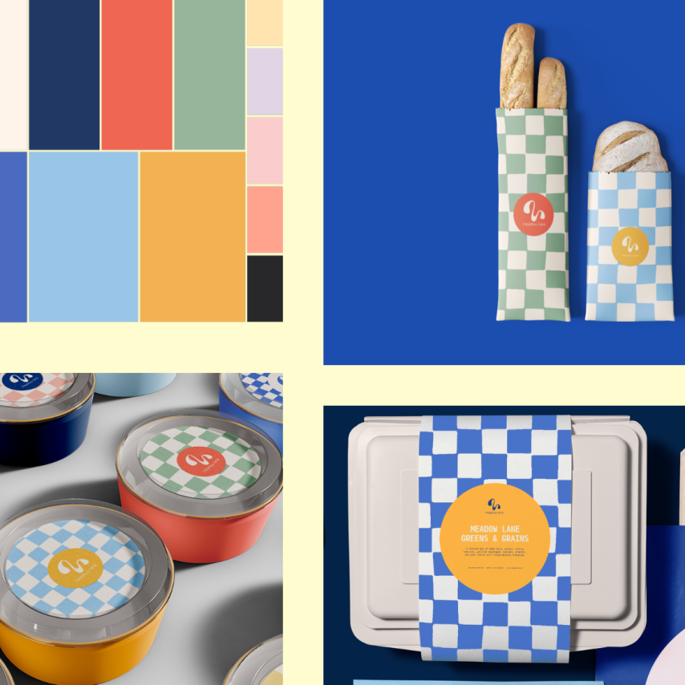
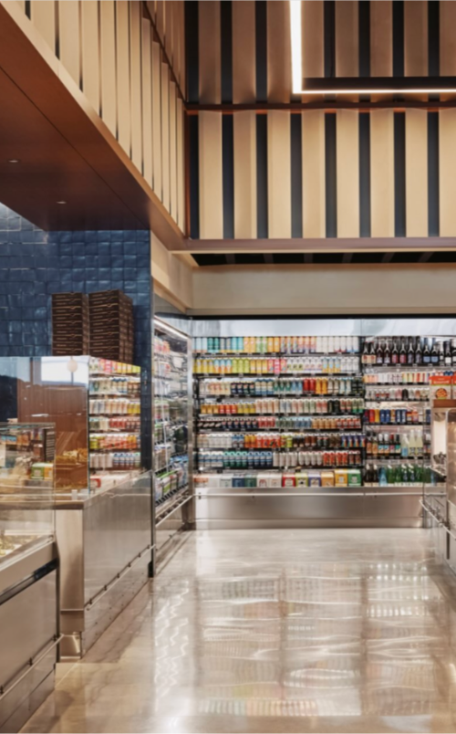
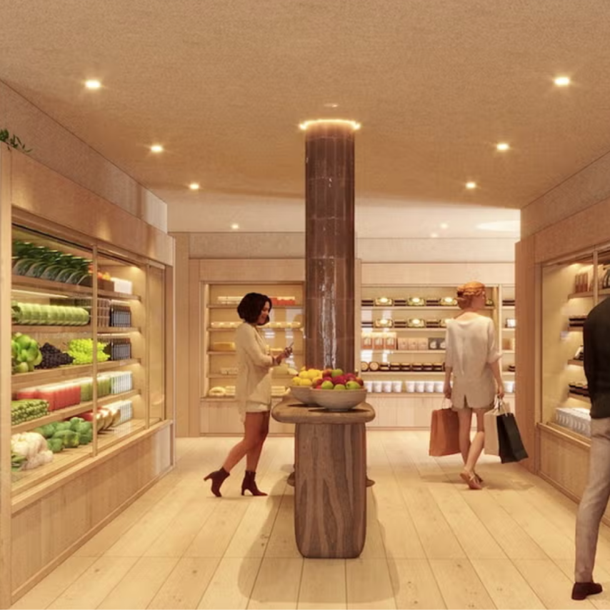

Case study
How does aligning CPG packaging with a store’s interior design and brand aesthetic influence how long consumers browse, and their likelihood of purchasing?
One of my creative interests is interior design. I design rooms for fun, look through Pinterest, and save things to a dream-home board. I am also interested in CPG, graphic design, and the psychology behind consumer decisions. This question is where those interests meet.
Meadow Lane · Erewhon · Happier Grocery


